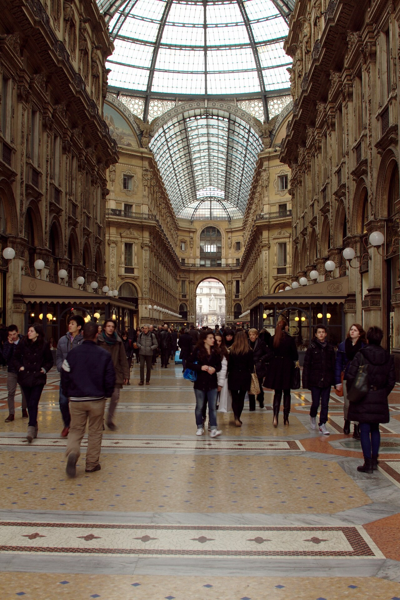

P003Architecture and art · 7–9 hours
Historic Milan
Start with the Duomo and rooftop, cross the Galleria, continue through Brera and finish at Sforza Castle or the Last Supper.
- Best for
- A first day in Milan
- Plan ahead
- Reserve the Last Supper early
- Pace
- Mostly walking, with easy Metro support